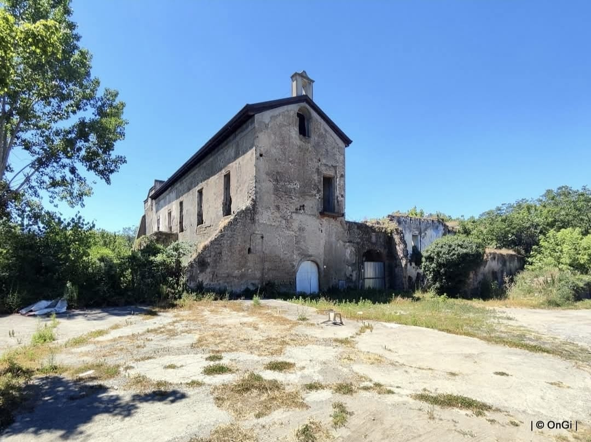
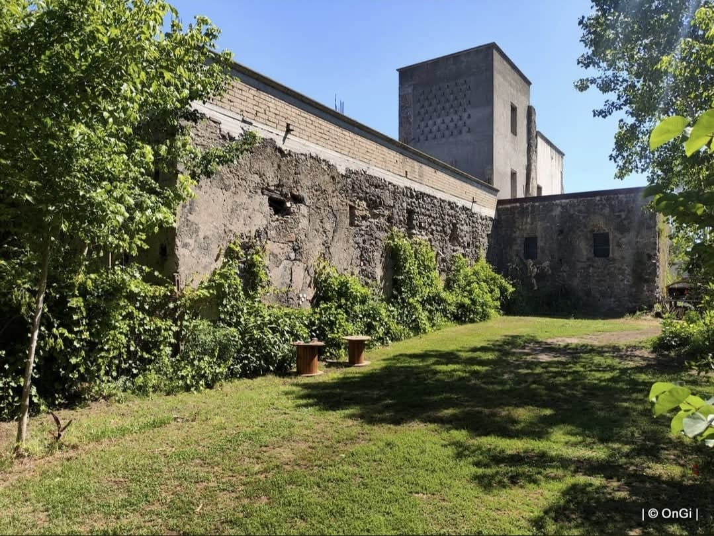
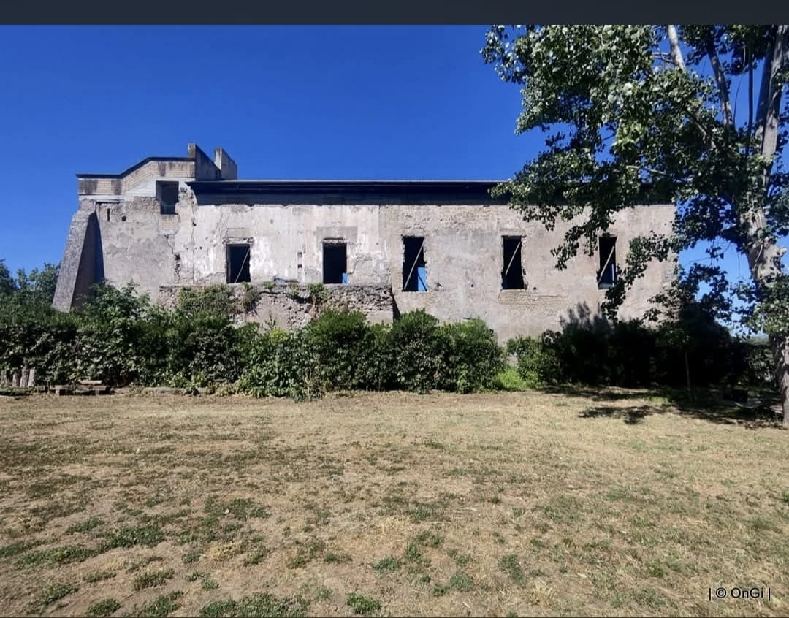
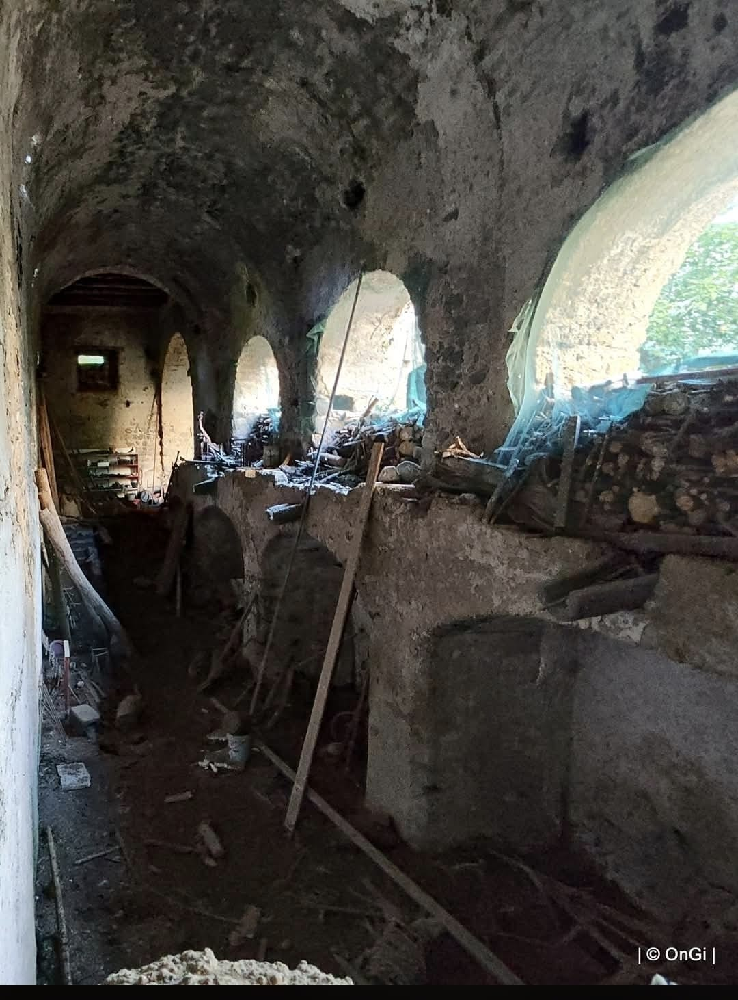
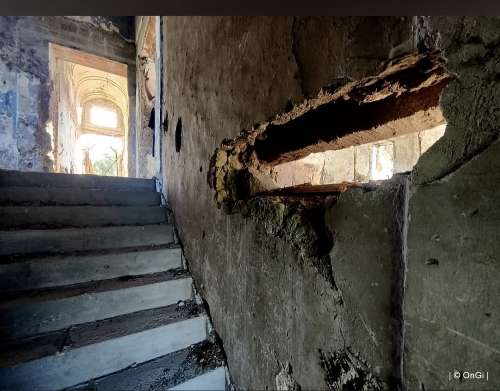
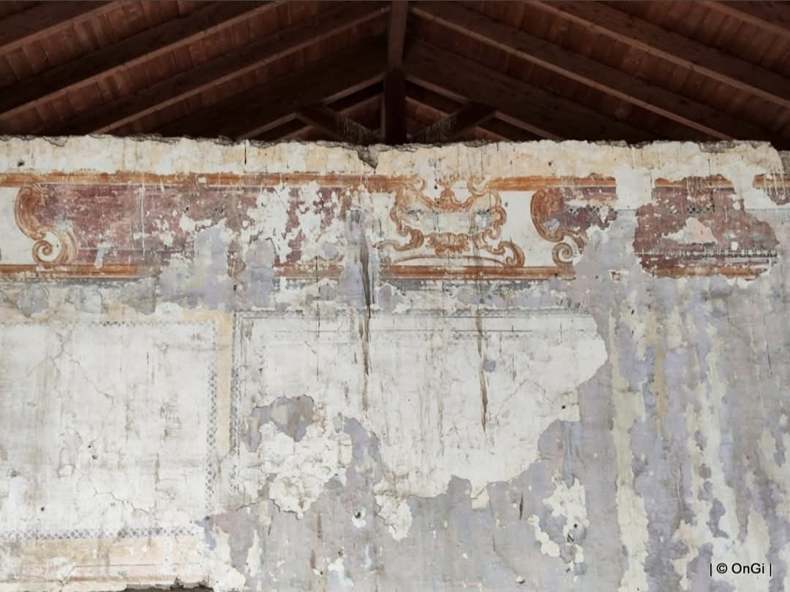
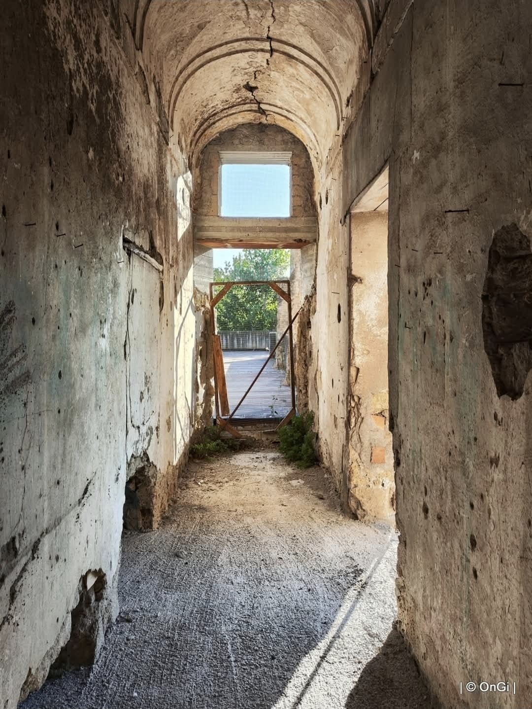
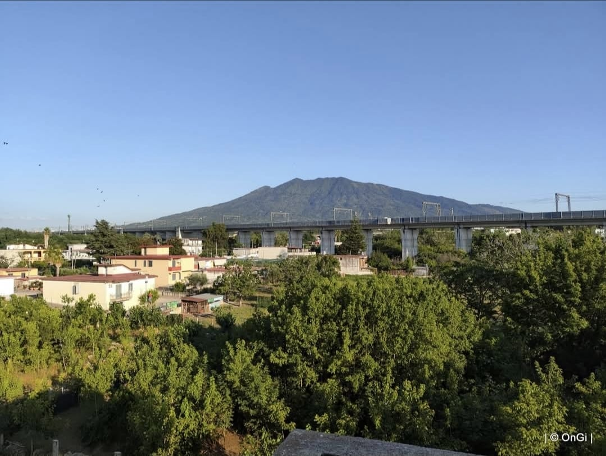

Un bosco vero, a due passi da casa.
Mamagrà è un impianto agroforestale di 20.000 m² tra Sant'Anastasia e Pomigliano d'Arco, nato durante la pandemia dalla trasformazione di un terreno di famiglia in un polmone verde per il territorio vesuviano.

Chi siamo
Mamagrà nasce nel cuore della pandemia, quando Savio Giuseppe Di Dato — agroforestatore, laureato in Scienze e Tecnologie Alimentari — decide di trasformare un terreno di famiglia, accanto all'antica Masseria Madonna delle Grazie, in un ecosistema vivo e rigenerativo.
Oggi Mamagrà è un impianto agroforestale di 20.000 m² tra i comuni di Sant'Anastasia e Pomigliano d'Arco (NA): alberi maestosi come pioppi, aceri e olmi convivono con alberi da frutto, viti rigogliose e un tappeto di erbe aromatiche.
«Il Mamagrà ci insegna che non serve andare lontano per ritrovare la
natura. A volte basta piantare un albero.»
— Savio Giuseppe Di Dato
Il progetto è ideato e guidato da Savio Giuseppe Di Dato, proprietario del terreno e artefice di Mamagrà, anche responsabile della sede operativa Mamagrà di Ecofood Fertility a Sant'Anastasia.
- Rigenerazione — trasformiamo terreni abbandonati in ecosistemi sani e vivi.
- Equilibrio — natura, biodiversità e produzione sostenibile convivono.
- Benessere — un polmone verde che fa bene all'aria e a chi lo vive.
Il luogo
Il nostro punto di partenza è l'antica Masseria Madonna delle Grazie: la stiamo recuperando passo dopo passo, insieme ai 20.000 m² di impianto agroforestale che la circondano, per farne un presidio vivo di rigenerazione ambientale.






La storia della Masseria
Le origini della Masseria Santa Maria delle Grazie risalgono al XV secolo, quando apparteneva alla Congregazione dei Poveri Eremiti di San Girolamo: il primo documento conosciuto è datato 26 agosto 1482. Nei decenni successivi la proprietà crebbe grazie a numerose donazioni, fino a raggiungere circa 300 moggia di terreno.
Un ruolo centrale nella sua storia è quello di Giovannello de Cuncto, segretario di Casa d'Aragona, che nel 1515 lasciò in eredità i suoi beni alla cappella di Santa Maria delle Grazie. La masseria conserva ancora oggi lo schema a corte chiusa, con la cappella rurale, gli alloggi per i braccianti e i locali un tempo usati per la lavorazione del vino.
Con la soppressione napoleonica del 1807 la proprietà passò al generale francese Jean Baptiste Jourdan, che la rivendette nel 1817 ai fratelli Biase e Antonio d'Andreana. Tra Ottocento e Novecento la masseria cambiò ancora proprietà, passando tra le famiglie Ruffo, Caracciolo di Castagneto e Di Marzo.
Dal 2006 la masseria è gestita da Savio Giuseppe Di Dato, che ne sta curando il recupero strutturale e il restauro conservativo, insieme alla rigenerazione del terreno circostante che oggi ospita Mamagrà.
Il territorio
Mamagrà si trova tra i comuni di Sant'Anastasia e Pomigliano d'Arco (NA), in via Madonna delle Grazie, ai piedi del Vesuvio: qui pioppi, aceri e olmi convivono con alberi da frutto, viti ed erbe aromatiche, in un'area agricola che vogliamo custodire e far crescere insieme al nostro impianto agroforestale.

Collaborazioni
Mamagrà è la sede operativa del progetto Ecofood Fertility a Sant'Anastasia, di cui Savio Giuseppe Di Dato è responsabile.
Contatti
Scrivici per informazioni, collaborazioni o per partecipare ai nostri progetti di riforestazione.
Contatto
Savio Giuseppe Di Dato
Telefono
+39 338 320 3910
Indirizzo
Via Madonna delle Grazie, Sant'Anastasia (NA)